#Remember, if you do not have these packages installed, install them first with (install.packages()). In These packages will allow us to access the functions we need to perform our analysis.
library(ggplot2) #plotting - part of tidyverse
library(patchwork) #have side by side plots
library(gapminder) #gives us acess to a dataset
library(tidyverse) #gives us access to all other libraries available in tidyverse. In reality would not need ggplot loaded as separate library if have already tidyverse loaded!Exercise 2.1 — Histograms and boxplots
Histograms show the overall shape and spread of the data distribution and box plots summarise key statistics (median, spread, and potential outliers) and are particularly helpful for comparing distributions across groups.
Summary Statistics
# Example data
data <- data.frame(age = c(2, 45, 56, 47, 67, 67, 68, 72, 75, 80, 85,86, 89,125))
head(data)#> age
#> 1 2
#> 2 45
#> 3 56
#> 4 47
#> 5 67
#> 6 67What is the distribution of the age data? What are the mean, median and standard deviation?
Mean <- mean(data$age)
Median <- median(data$age)
Sd <- sd(data$age)Other data distribution descriptors include quantiles, which divide data into equal-sized intervals:
0% (Minimum) 25% (Q1, First Quartile) 50% (Median, Second Quartile) 75% (Q3, Third Quartile) *100% (Maximum)
Quantile <- quantile(data$age)
Quantile#> 0% 25% 50% 75% 100%
#> 2.00 58.75 70.00 83.75 125.00The IQR (Interquartile Range) measures the spread of the middle 50% of your data.
If you look at the Quantile results above, you can calculate it from \(IQR=Q3−Q1\), where Q3 is the value beyond which 75% of your data lies. What is then Q2? The value beyond which 25% of your data lies.
IQR <- IQR(data$age)
IQR#> [1] 25Can do it in a single go:
summary(data$age) #> Min. 1st Qu. Median Mean 3rd Qu. Max.
#> 2.00 58.75 70.00 68.86 83.75 125.00As we saw, lots of different datasets can end up with these summary statistics, so lets plot it to get real insight about what is happening:
Histogram in R
A histogram is a way to visualise the frequency distribution of a dataset. It groups data into bins and shows how many data points fall into each bin
ggplot(data, aes(x = age)) +
geom_histogram() 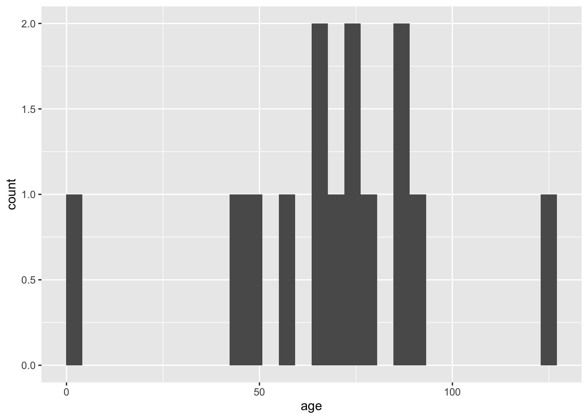
You can modify the binwidth parameter, what is happening here?
ggplot(data, aes(x = age)) +
geom_histogram(binwidth = 30) 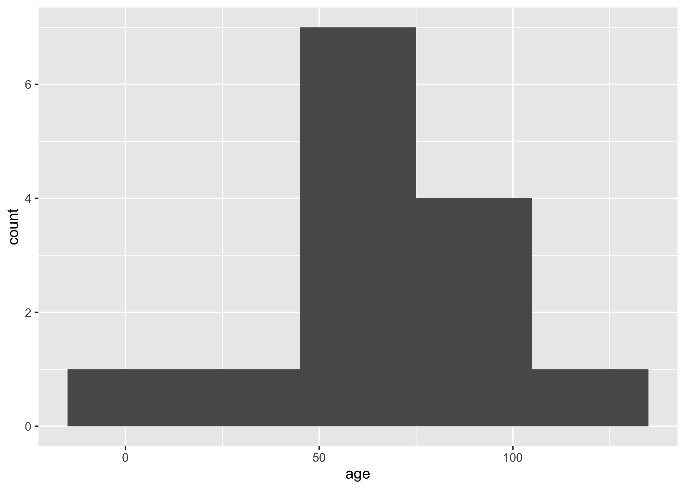
Now lets go back t original and add the mean and median
ggplot(data, aes(x = age)) +
geom_histogram() +
geom_vline(xintercept = Mean, color = "red", linetype = "dashed", size = 1) +
geom_vline(xintercept = Median, color = "blue", linetype = "dashed", size = 1)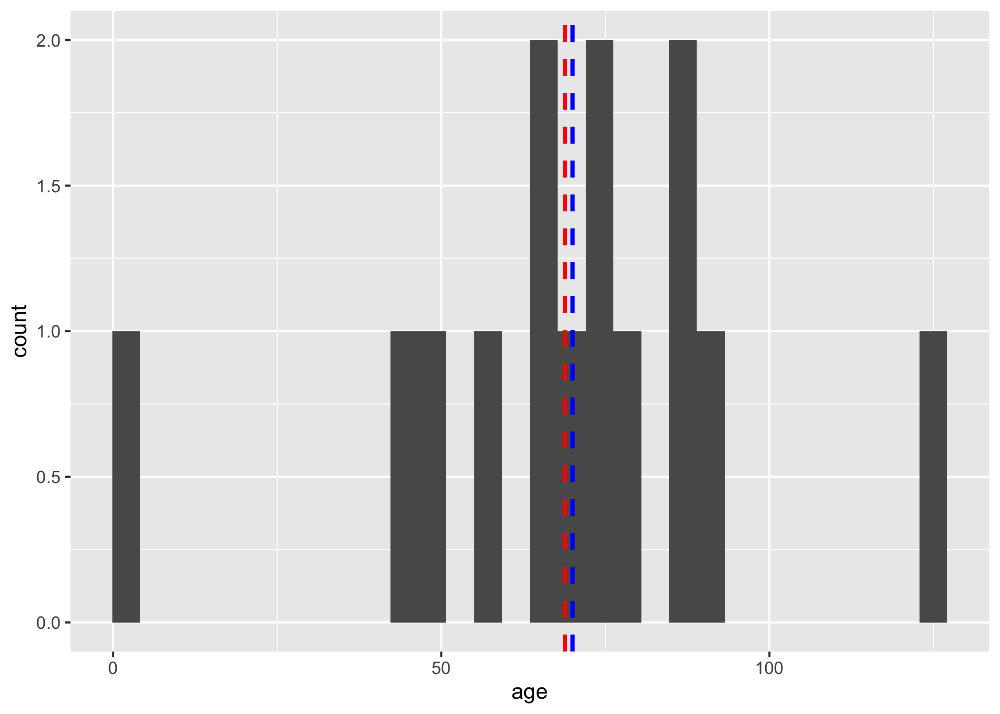
If do not remember how ggplot works , here is a cheatsheet: https://rstudio.github.io/cheatsheets/html/data-visualization.html
In summary, a histogram helps you understand the shape of your data distribution (e.g., normal, skewed) and peaks indicate the most frequent values.
Box Plot in R
A box plot (or box-and-whisker plot) summarises the distribution of a dataset. It highlights:
- Median (middle line in the box).
- Quantiles (the box spans from the 25th percentile to the 75th percentile)
- IQR (Interquartile Range): The difference between the 75th and 25th percentiles - (IQR range calculated above)
- Whiskers: Extend to data points within 1.5*IQR (above or beyond = outliers)
ggplot(data, aes(x = age)) +
geom_boxplot() +
coord_flip() #have you checked what this does? Take it out and see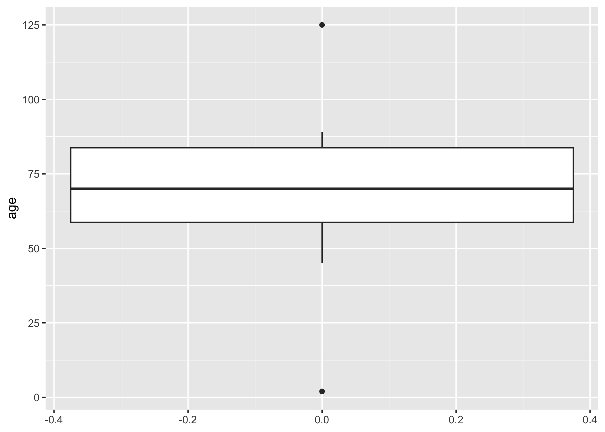
Can you see summary statistics mapped here?
Lets plot the mean (as it is a value that is not reflected in a boxplot!)
ggplot(data, aes(x = age)) +
geom_boxplot() +
coord_flip() +
geom_vline(xintercept = Mean, color = "blue", linetype = "dashed", size = 1) 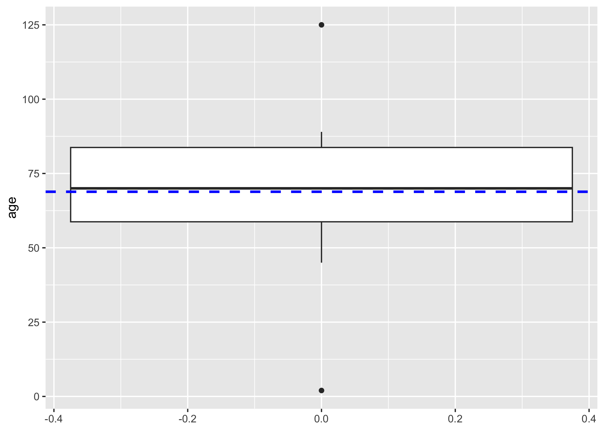
For an extra challenge, add another geom layer, i.e geom_jitter. What does it do? How is it different from geom_point?
Now, lets go a step further. If we want to understand how the data varies by groups, we can use facets:
ggplot(data, aes(x = age, y = "age" )) +
geom_boxplot() +
geom_jitter() +
coord_flip() +
geom_vline(xintercept = Mean, color = "blue", linetype = "dashed", size = 1) 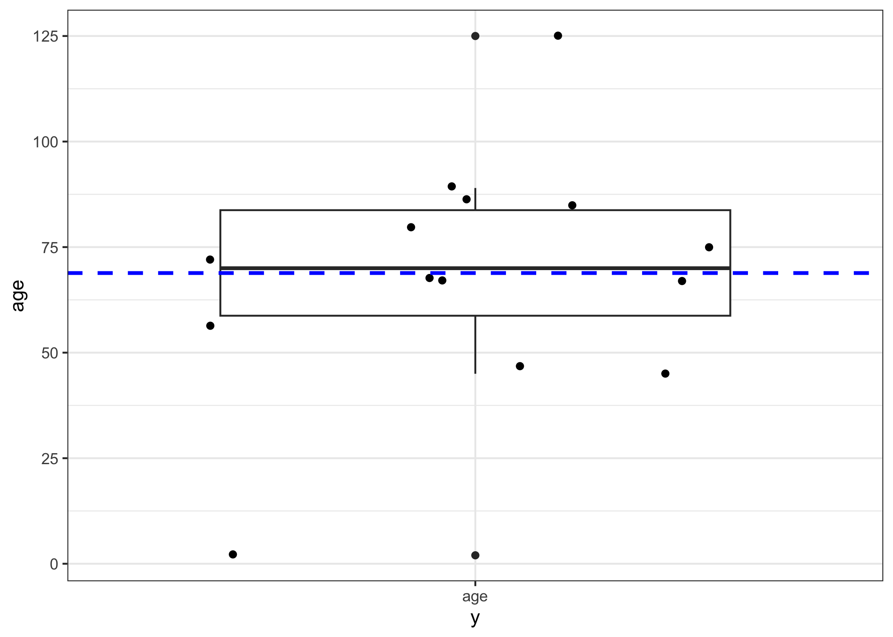
# Sample data
set.seed(123)
data <- data.frame(
Group = rep(c("A", "B", "C"), each = 200),
Value = c(rnorm(200, mean = 5, sd = 1),
rnorm(200, mean = 6, sd = 1.2),
rnorm(200, mean = 7, sd = 1.5))
)# Combined Plot
p1 <- ggplot(data, aes(x = Group, y = Value, fill = Group)) +
# Violin + Boxplot + Jitter
geom_boxplot(width = 0.2, outlier.color = "red", outlier.size = 2, colour = "black") +
geom_jitter(position = position_jitter(0.2), color = "black", alpha = 0.4) + #scatter plot but in random positions, check geom_point() and see
labs(title = "Boxplot and Violin Plot with Jitter", x = "Groups", y = "Values") +
theme_minimal()p2 <- ggplot(data, aes(x = Value, fill = Group)) +
# Histogram
geom_histogram(alpha = 0.6, position = "identity", binwidth = 0.3, colour = "black") +
labs(title = "Histogram of Values by Group", x = "Values", y = "Count") +
theme_minimal()# Display both plots side by side (thanks to having patchwork installed)
p1 + p2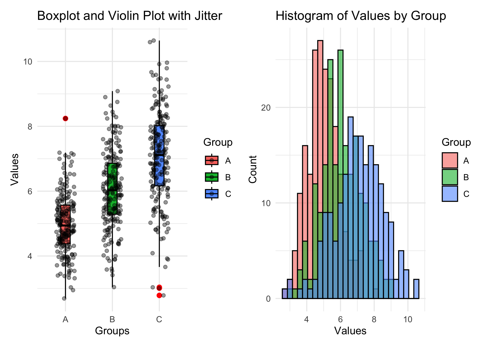
# Display both plots up down
p1 / p2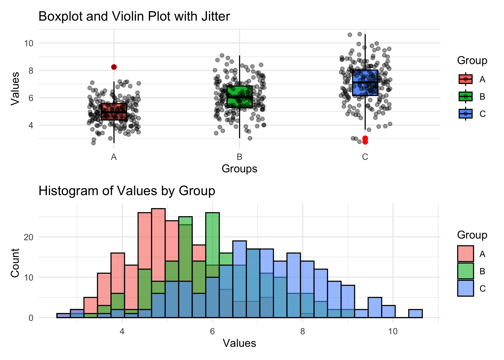
Lets use this in another dataset (gapminder dataset that we have access to, thanks to the loaded package gapminder)
# Box plot with facets by year
ggplot(gapminder, aes(x = continent, y = lifeExp, fill = continent)) +
geom_boxplot() +
facet_wrap(~ year) + # Create facets for each year
labs(title = "Life Expectancy Across Continents by Year",
x = "Continent",
y = "Life Expectancy") +
theme_minimal() + #just to make it nice
theme(axis.text.x = element_text(angle = 45, hjust = 1)) # Rotate x-axis labels - just to make it nice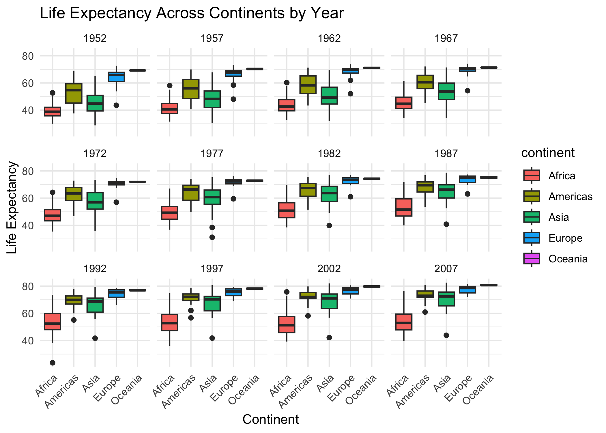
What is happening here? View (gapminder) dataset. If we focus on 1952 year, extract the necessary values to create the boxplot for Africa (use data wrangling skills through tidyverse package).
Subgroup <- gapminder %>%
filter(year == "1952") %>%
filter(continent == "Africa")
Median <- median(Subgroup$lifeExp)
Median#> [1] 38.833Does it match the plot?
The same steps in Python
The same practical again, in Python, without the commentary — the ideas are the ones above. matplotlib draws the figures and seaborn adds the grouped plots; pandas does the summary statistics.
import pandas as pd
import numpy as np
import matplotlib.pyplot as plt
import seaborn as snsThe R side loads gapminder as a package. On the Python side the same table is in the data folder you downloaded, so read it from there:
gapminder = pd.read_csv("data/gapminder.csv")
gapminder.head()#> country continent year lifeExp pop gdpPercap
#> 0 Afghanistan Asia 1952 28.801 8425333 779.445314
#> 1 Afghanistan Asia 1957 30.332 9240934 820.853030
#> 2 Afghanistan Asia 1962 31.997 10267083 853.100710
#> 3 Afghanistan Asia 1967 34.020 11537966 836.197138
#> 4 Afghanistan Asia 1972 36.088 13079460 739.981106Summary statistics
data = pd.DataFrame({"age": [2, 45, 56, 47, 67, 67, 68, 72,
75, 80, 85, 86, 89, 125]})
data.head()#> age
#> 0 2
#> 1 45
#> 2 56
#> 3 47
#> 4 67Mean = data["age"].mean()
Median = data["age"].median()
Sd = data["age"].std() # ddof=1, matching R's sd()
print(Mean, Median, Sd)#> 68.85714285714286 70.0 27.69853409855459Quantiles, then the interquartile range as Q3 - Q1:
Quantile = data["age"].quantile([0, .25, .5, .75, 1])
print(Quantile)#> 0.00 2.00
#> 0.25 58.75
#> 0.50 70.00
#> 0.75 83.75
#> 1.00 125.00
#> Name: age, dtype: float64IQR = Quantile[0.75] - Quantile[0.25]
print(IQR)#> 25.0All of it in one go — describe() is the equivalent of summary():
data["age"].describe()#> count 14.000000
#> mean 68.857143
#> std 27.698534
#> min 2.000000
#> 25% 58.750000
#> 50% 70.000000
#> 75% 83.750000
#> max 125.000000
#> Name: age, dtype: float64Histogram
fig, ax = plt.subplots()
ax.hist(data["age"], bins=30)
ax.set_xlabel("age")
plt.show()Change the bin width and watch the shape change:
fig, ax = plt.subplots()
ax.hist(data["age"], bins=np.arange(0, 151, 30))
ax.set_xlabel("age")
plt.show()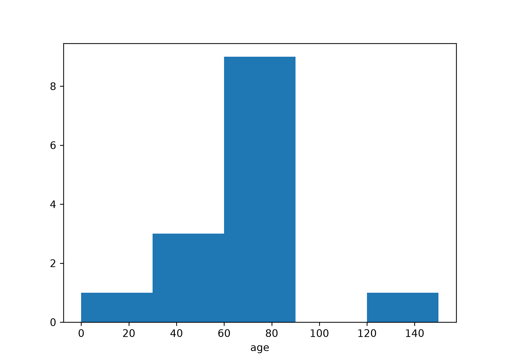
Now add the mean and the median:
fig, ax = plt.subplots()
ax.hist(data["age"], bins=30)
ax.axvline(Mean, color="red", linestyle="--")
ax.axvline(Median, color="blue", linestyle="--")
ax.set_xlabel("age")
plt.show()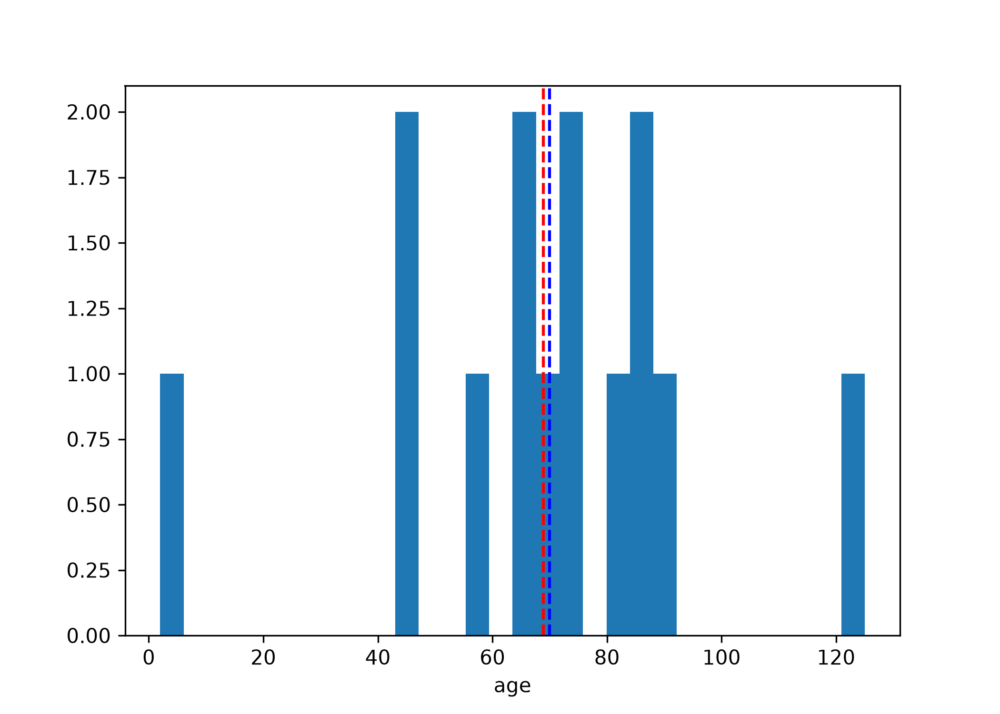
Box plot
vert=False is the equivalent of coord_flip() — take it out and see.
fig, ax = plt.subplots()
ax.boxplot(data["age"], vert=False)#> {'whiskers': [<matplotlib.lines.Line2D object at 0x3298a2f90>, <matplotlib.lines.Line2D object at 0x3298c7ad0>], 'caps': [<matplotlib.lines.Line2D object at 0x3298d43d0>, <matplotlib.lines.Line2D object at 0x327ef7a10>], 'boxes': [<matplotlib.lines.Line2D object at 0x329887290>], 'medians': [<matplotlib.lines.Line2D object at 0x3298d4e50>], 'fliers': [<matplotlib.lines.Line2D object at 0x3298d5590>], 'means': []}ax.set_xlabel("age")
plt.show()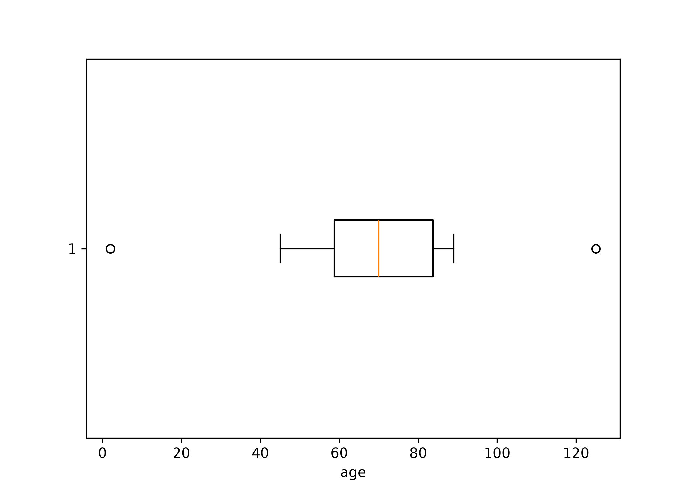
The mean is not part of a box plot, so add it yourself:
fig, ax = plt.subplots()
ax.boxplot(data["age"], vert=False)#> {'whiskers': [<matplotlib.lines.Line2D object at 0x32992c8d0>, <matplotlib.lines.Line2D object at 0x32992d190>], 'caps': [<matplotlib.lines.Line2D object at 0x32992da50>, <matplotlib.lines.Line2D object at 0x32992e210>], 'boxes': [<matplotlib.lines.Line2D object at 0x329902610>], 'medians': [<matplotlib.lines.Line2D object at 0x32992ea50>], 'fliers': [<matplotlib.lines.Line2D object at 0x32992f1d0>], 'means': []}ax.axvline(Mean, color="blue", linestyle="--")
ax.set_xlabel("age")
plt.show()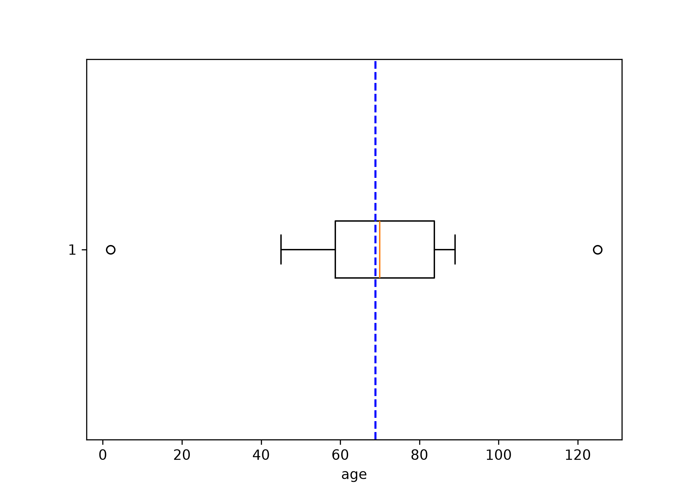
stripplot is the equivalent of geom_jitter(): the points, moved sideways at random so they do not sit on top of each other.
fig, ax = plt.subplots()
sns.boxplot(x=data["age"], ax=ax, width=0.3)
sns.stripplot(x=data["age"], ax=ax, color="black", alpha=0.4, jitter=0.1)
ax.axvline(Mean, color="blue", linestyle="--")
plt.show()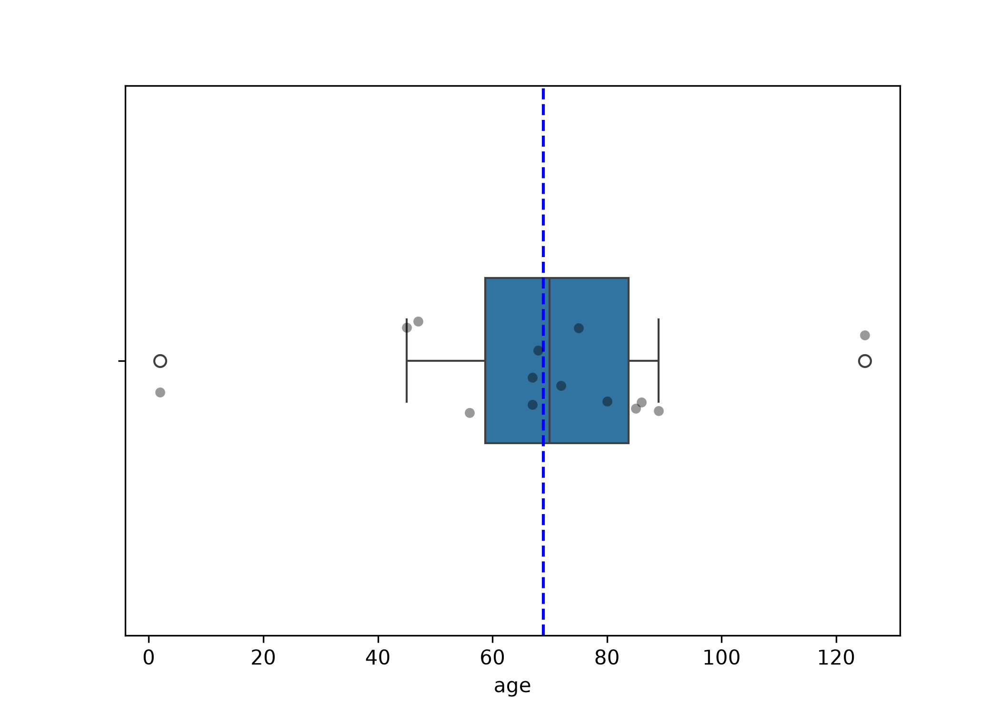
By group
rng = np.random.default_rng(123)
grouped = pd.DataFrame({
"Group": np.repeat(["A", "B", "C"], 200),
"Value": np.concatenate([rng.normal(5, 1.0, 200),
rng.normal(6, 1.2, 200),
rng.normal(7, 1.5, 200)]),
})Side by side, which is what p1 + p2 does with patchwork:
fig, (ax1, ax2) = plt.subplots(1, 2, figsize=(10, 4))
sns.boxplot(data=grouped, x="Group", y="Value", hue="Group",
width=0.2, ax=ax1,
flierprops=dict(markerfacecolor="red", markersize=4))
sns.stripplot(data=grouped, x="Group", y="Value",
color="black", alpha=0.4, ax=ax1)
ax1.set_title("Boxplot with jitter")
for g, d in grouped.groupby("Group"):
ax2.hist(d["Value"], bins=np.arange(0, 13, 0.3), alpha=0.6,
edgecolor="black", label=g)
ax2.legend(title="Group")
ax2.set_title("Histogram of Values by Group")
plt.show()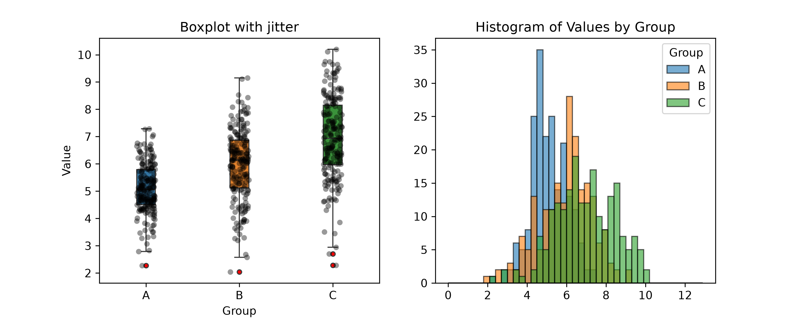
One above the other is p1 / p2: the same call with subplots(2, 1).
gapminder
g = sns.catplot(data=gapminder, x="continent", y="lifeExp", hue="continent",
col="year", col_wrap=4, kind="box", height=2.2)
g.set_xticklabels(rotation=45, ha="right")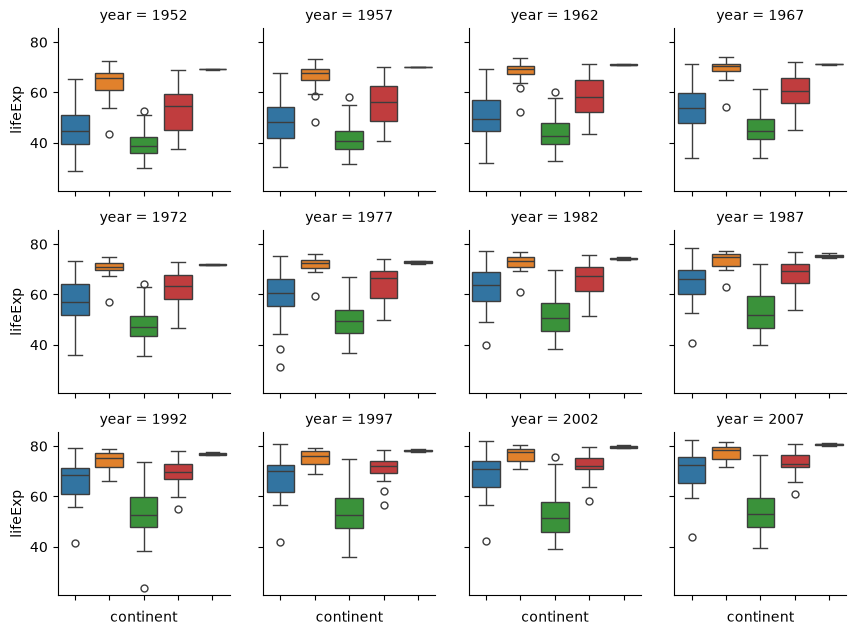
g.set_titles("{col_name}")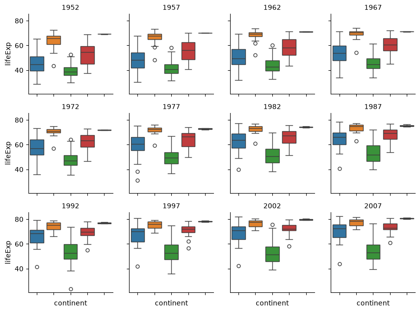
plt.show()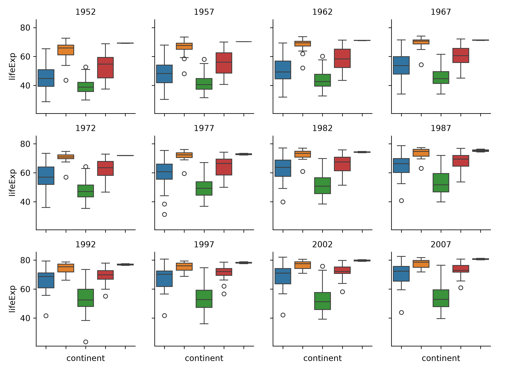
Then the same question: for 1952, in Africa, does the median match the plot?
Subgroup = gapminder[(gapminder["year"] == 1952) &
(gapminder["continent"] == "Africa")]
Subgroup["lifeExp"].median()#> np.float64(38.833)